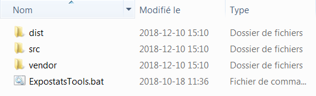

Outils statistiques pour l'interprétation des données d'hygiène

ExpostatsTools - Multi-outils hors-ligne - Guide d'usage
Installation
- Téléchargez le fichier archive (~320 Mo)
- Démarrez le processus d'extraction en double-cliquant sur le fichier
-
Vous verrez comme premier panneau l'information suivante :
 Ce message est affiché de la part d'un logiciel tier gratuit dont on se sert et peut être ignoré.
Ce message est affiché de la part d'un logiciel tier gratuit dont on se sert et peut être ignoré.
Cliquez sur «OK». -
Au deuxième panneau vous devez préciser où mettre le contenu de l'archive :
Cliquez sur «Suivant» pour avancer. -
Au troisième vous avez l'option de faire placer un raccourci à votre multi-outils sur votre Bureau.
Il est recommandé que vous sélectionniez «Oui». Cliquez sur «Suivant» pour amorcer l'extraction du fichier archive. -
Pendant l'extraction vous verrez un panneau qui ressemble à celui ci-dessous :
Exécution
-
Pour lancer le multi-outils, double-cliquez sur le raccourci que vous avez fait placer sur votre Bureau lors de l'installation.
Vous pouvez également ouvrir l'Explorateur Windows et aller au dossier dans lequel vous avez extrait le fichier archive :  Ensuite, double-cliquez sur l'exécutable «ExpostatsTools.bat» -
Quatre onglets (un pour chaque outil) s'ouvriront dans votre navigateur :
Les outils roulent sur votre propre poste mais ont la même fonctionnalité que ceux sur expostats.ca.
Une petite fenêtre apparaîtra en dehors du navigateur qui contient un bouton intitulé «Quitter». - Quand vous êtes terminé, cliquez sur «Quitter» pour faire cesser le roulement des outils.
Date de dernière mise à jour :